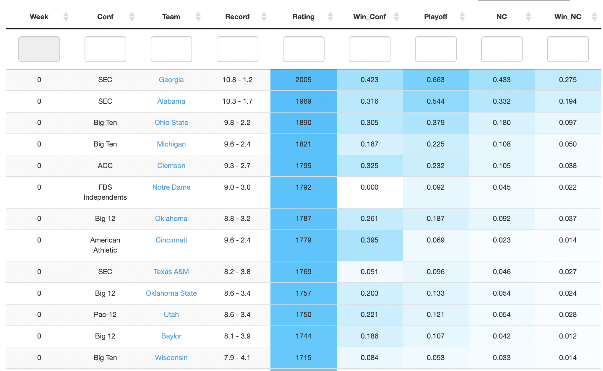
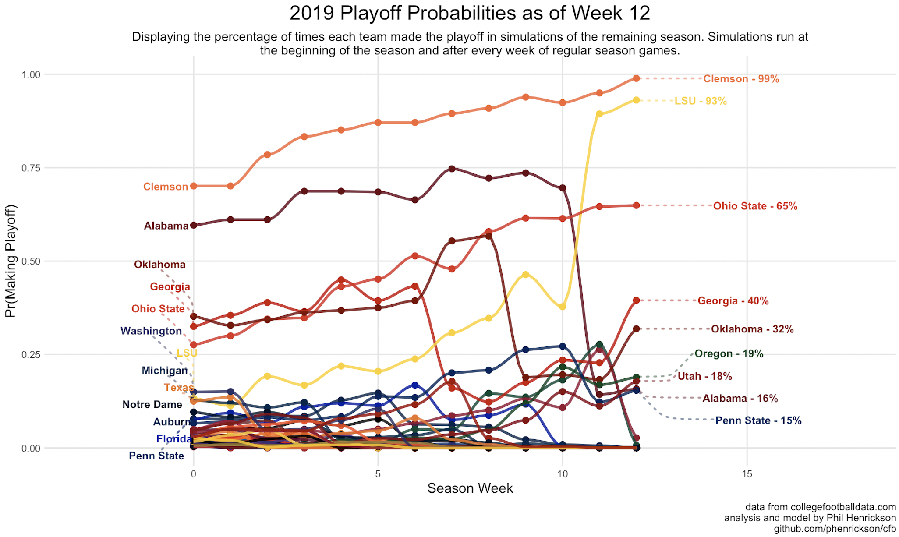

Here are some CFB projects I’ve been working on using data from collegefootballdata.com. Go to github.com/phenrickson/cfb to find my the code.
Disclaimer: Despite spending more years at Florida State (and being on campus for the 2013 championship season) while I worked on my PhD, my own college football loyalties lie with my undergraduate university, Texas A&M.
 
Which teams are most likely to win their conference? Make the playoff? Win the national championship?
2022 Postseason
2022 Regular Season
Team Predictions // Game Predictions
Team Profile Examples
I simulate the remainder of the college football season 1000 times after every week of the regular season. These simulations come from an (adjusted) Elo model that I developed using historical game and play by data - the current iteration of the model uses historical game outcomes, team offensive and defensive efficiency metrics, and recruiting composites in order to estimate a team’s relative rating compared to other teams.
2021
Team Predictions as of Week 14 // Game Predictions as of Week 14
Team Predictions as of Week 9 // Game Predictions as of Week 9
Team Predictions as of Week 5 // Game Predictions as of Week 5
Team Predictions as of Week 0 // Game Predictions as of Week 0
2019
Team Predictions as of Week 14 // Game Predictions as of Week 14
Team Predictions as of Week 9 // Game Predictions as of Week 9
Team Predictions as of Week 5 // Game Predictions as of Week 5
Team Predictions as of Week 0 // Game Predictions as of Week 0
How valuable is a 3 yard gain on 1st and 10 compared to a 3 yard gain on 3rd and 2? How good a is a team’s offense or defense relative to other teams? How efficient is a team when passing the ball on third downs?
To answer questions like these, I develop and explore an expected points model at the play level for evaluating college football offenses and defenses. The goal of this analysis is to place a value on offensive/defensive plays in terms of their contribution’s to a team’s expected points.
I train a multinomial logistic regression on the next scoring event for each play (TD, FG, Opp. TD, Opp. FG, etc) as a function of the situation in the game (down, distance, yards to goal). I use the probabilities from this model to compute expected points at the play level, which I then aggregate to the team, game, and season level in order to measure each team’s raw offensive/defensive efficiency.
I then adjust each team’s raw efficiency metrics based on the quality of their opponents via a ridge regression in order to obtain opponent adjusted offensive/defensive efficiency metrics for every team. I plot these at the season level to examine a how a team’s offense/defense has changed since 2007.
Expected Points Methodology // Examining Individual Plays via Expected Points // Opponent Adjusted Expected Points